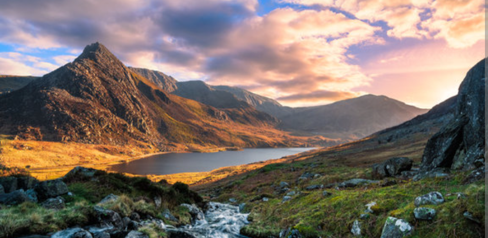
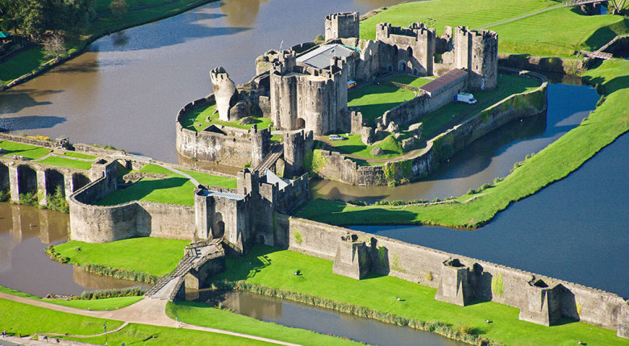
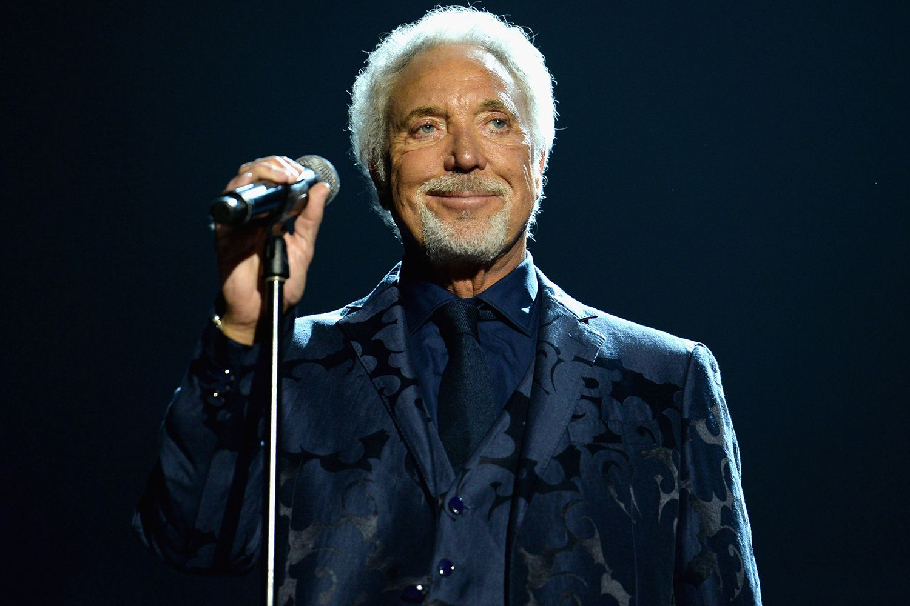
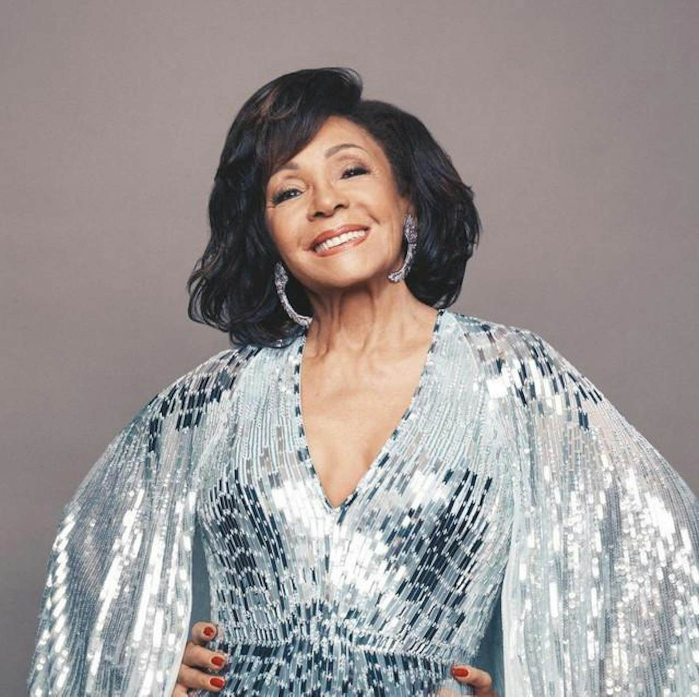
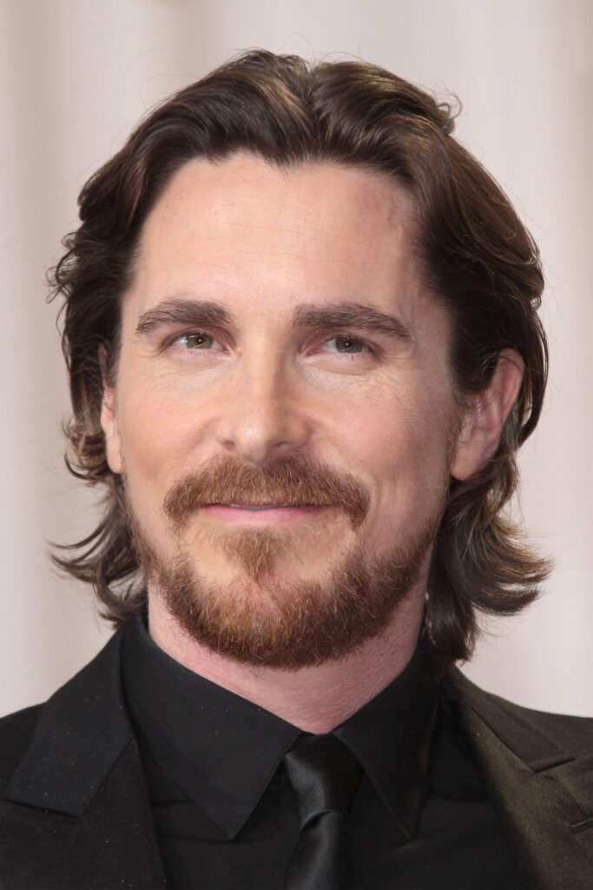
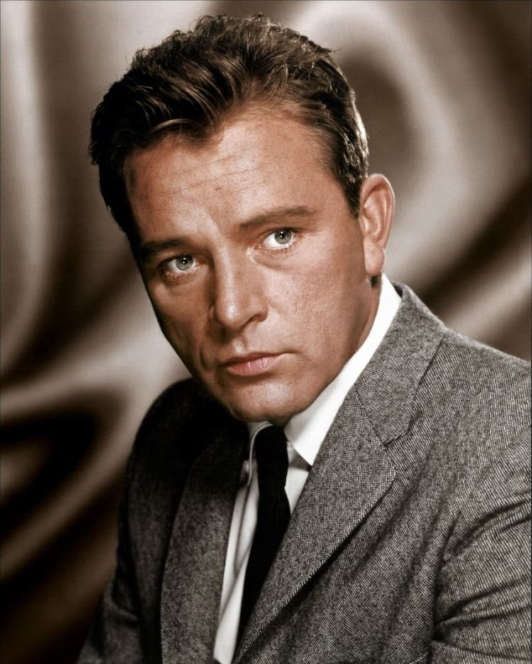
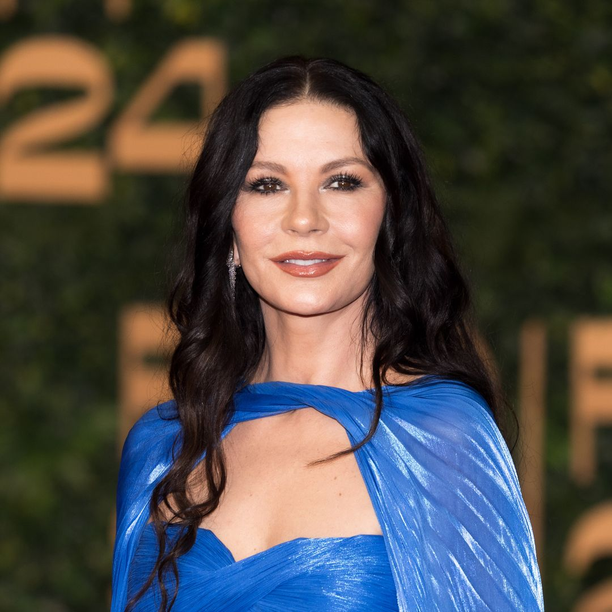
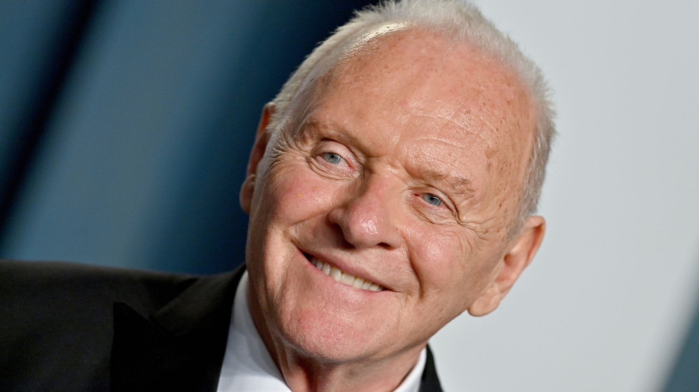

Beautiful landscapes, historic castles, and famous Welsh icons.

Snowdonia National Park is famous for its dramatic mountains, lakes, waterfalls and hiking trails.

Caerphilly Castle is one of the largest medieval castles in Britain, known for its moat and towers.

Legendary singer known worldwide for his powerful voice.
🎵 He was bedridden for 2yrs when he was 12 with tubercolosis, he sang constantly and recovered with a booming voice.

Iconic singer famous for recording several James Bond theme songs.
🎤 Is the only artist to record three songs for the James Bonds tracks.

Award-winning actor famous for Batman, The Fighter and The Machinist.
🦇 He lost 63lbs for the role in The Machinist in 2004.

One of Wales' greatest stage and film actors of the twentieth century.
🎭 He was nominated for seven Academy awards but unfortunately did not win.

Academy Award-winning actress born in Swansea, Wales.
🎬 Her middle name is inspired by a merchant ship that carried copper from South Wales to South Africa.

Academy Award-winning actor celebrated for film, television and theatre.
🏆 In 1998 he donated $1million to the National Trust that safeguarded Snowdonia from private development.